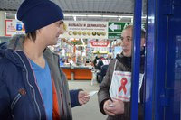
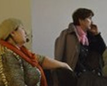
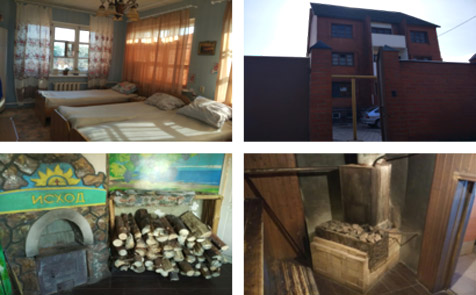

круглосуточный бесплатный телефон
8 800 333 0981Реабилитация наркоманов и алкозависимых, весь процесс реабилитационной помощи в центрах АНОЦАНЗ «Здоровое Черноземье» состоит из 4-х взаимосвязанных этапов, которые представляют собой неотъемлемые части единого процесса, основанного на объективной оценке реального состояния пациентов в динамике. Важно отметить, что только прохождение полного курса по программе реабилитации «Исход», состоящего из этих четырех этапов, дает устойчивый желаемый результат и возможность дальнейшего самоопределения в жизни.
Владимир
Всем привет, меня зовут Владимир. Хочу рассказать о себе: В прошлом я был зависимый человек, жизнь моя не имела никакого смысла, я существовал! Своим родным, близким я приносил только одну боль. Жизнь в зависимости привела к тому, что я потерял надежду на то, что можно жить по другому. Я просто опустил руки и плыл по течению...
Показать полностьюВладимир
Всем привет, меня зовут Владимир. Хочу рассказать о себе: В прошлом я был зависимый человек, жизнь моя не имела никакого смысла, я существовал! Своим родным, близким я приносил только одну боль. Жизнь в зависимости привела к тому, что я потерял надежду на то, что можно жить по другому. Я просто опустил руки и плыл по течению...
Показать полностьюСоциальная реабилитация наркозависимых «Исход» как программа - это не плод теоретиков, а результат многолетнего опыта работы с зависимыми. Прежде всего, это опыт собственного преодоления наркомании, алкоголизма и достижения здоровой полноценной жизни. Она основана на глубоком понимании самой болезни и того, что необходимо для выздоровления и предотвращения срыва. Появляются новые виды наркотиков, изменяются способы и последствия их употребления, сами потребители наркотиков их понятия и отношения. Мы тоже не стоим на месте, внимательно следим за изменением ситуации наркопотребления, открытиями в сфере реабилитации, приобретаем новые знания, обмениваемся опытом с другими специалистами, совершенствуем свои методы и подходы.
Это значит, что наша программа «живая» и актуальная, она соответствует времени, состоянию общества и конкретного человека, которому служит. Реабилитация наркоманов и алкоголиков. Что мы под этим понимаем? Под реабилитацией нами понимается: комплекс технологий и методик, направленных на возвращение лицам, зависимым от психоактивных веществ (ПАВ), способности контролировать свою жизнь после отказа от употребления ПАВ с непременным восстановлением и развитием нравственно-этических норм поведения.
Об "Исходе" все узнают по разному, от знакомых, через объявление, интернет, взятую в аптеке или на улице визитку. Потом все просто - телефонный звонок и встреча. Как театр начинается с вешалки, так и участие в программе социальной реабилитации "Исход" начинается с ознакомительно-консультативного периода отношений, который включает в себя следующие действия: Информирование и мотивация на участие в программе. В ходе этого этапа информация о деятельности организации распространяется среди наркозависимых и их ближайшего окружения, через средства массовой информации, путем личного общения, через учреждения социально-медицинского обслуживания и учета (наркодиспансеры, УИНы).
Зная психологию и образ жизни наркозависимых, мы не ждем, пока они к нам обратятся, но сами находим их и предлагаем помощь. Знакомимся, строим доверительные отношения в их среде.
Как показывает практика, такой способ гораздо эффективнее пассивного ожидания. Этим делом в "Исходе" занимаются сотрудники и волонтеры из числа бывших зависимых, успешно прошедших курс реабилитации наркоманов и работающих консультантами программы, а также выходцы из реабилитационных центров, проходящие этап социальной адаптации в городе. Они хорошо знают наркотическую субкультуру, имеют опыт неформального общения с зависимыми, легко проникают в закрытую для посторонних среду. Им не нужно много слов, чтобы понять друг друга, ведь "рыбак рыбака видит издалека". Пожалуй, ни что не вселяет в наркомана и его ближних такую надежду на возможность выздоровления, как бывший наркоман, у которого получилось бросить и жить нормально. Личное свидетельство является также мощным мотивационным фактором для зависимых людей, побуждающим их к участию в программе реабилитации.
Подготовительный (предреабилитационный) этап предшествует реализации Программы реабилитации. Он начинается с периода обращения пациента за помощью, когда на началах добровольности и открытости, обычно в присутствии родственников, пациент дает информацию о самом себе и специалисты (психологи, волонтеры) устанавливают первоначальный статус пациента и форму зависимости.
На этом этапе отношений семье предоставляется исчерпывающая информация о Программе «Исход», разъясняются её основные принципы, правила, сроки восстановления, условия, религиозная направленность, конфессиональная принадлежность и т.д.
На этом этапе отношений семье предоставляется исчерпывающая информация о Программе «Исход», разъясняются её основные принципы, правила, сроки восстановления, условия, религиозная направленность, конфессиональная принадлежность и т.д. консультацияПараллельно осуществляется первичная мотивация пациента и его родственников на участие в продолжительном, многоэтапном реабилитационном процессе. Прорабатываются интересующие вопросы. Родственникам предоставляются консультации и материалы по проблемам «созависимости», т. е. о конструктивных способах восстановления здоровья пациента и семейных отношений. Подготовительный консультативный период продолжается до тех пор, пока у зависимого не возникнет желание изменить образ жизни и пройти курс реабилитации по программе «Исход». Хотя на первый взгляд истории наркоманов похожи, не бывает одинаковых людей и одинаковых семейных ситуаций. В каждом случае необходим индивидуальный подход. От него во многом зависит успех будущей реабилитации. Подготовительный, консультативный период длится от нескольких дней или недель до нескольких месяцев. В это время вырабатывается стратегия взаимодействия с семьей, решаются организационные вопросы, связанные с отъездом в реабилитационный центр.
Реабилитационные центры «Исход», представляют собой терапевтические сообщества из 15-20 участников, объединенных общим интересом и стремлением - освободиться от зависимого поведения и разрушительных пристрастий, таких как алкоголизм, наркомания, игромания и другие. Центр - это прежде всего дух, особая атмосфера, которая складывается из настроения, характеров и взаимоотношений всех его участников. Одинокой веры и усилия бывает недостаточно, для преодоления тяжелых внутренних проблем связанных с наркотиками. Но, когда люди объединяются в общем желании победить свою болезнь, между ними возникает особенная общность, высвобождается сила дружбы, единства и взаимопонимания. Размещаются центры в арендуемых домах со всеми необходимыми условиями для проживания, занятий и отдыха. Находятся они, как правило, за городом, подальше от суеты, вредных воздействий и раздражителей. В центрах организовано трехразовое питание, распорядок дня, насыщенная внутренняя жизнь, учебный процесс, спорт и досуг. Во всех центрах реабилитации наркоманов, независимо от их места расположения, действует единая программа реабилитации "Исход" и поддерживается одинаковый распорядок дня и недели. В расписание входят занятия для развития памяти, интеллекта, навыков здорового общения и проведения досуга, тренинги личностного роста, викторины, творческие вечера, общеобразовательные и культурные мероприятия, много тематического общения, направленного на формирование жизнеспособности и устойчивости к срыву.
Основой программы является её духовная составляющая - приобщение участников к христианскому вероучению и системе ценностей. Это происходит через общение с пасторами и служителями церкви, совместные молитвы, чтение Св. Писания, а так же поддержание образа жизни христианской общины. Программа основана на принципах добровольного соблюдения всеми участниками, включая старших, определенного режима и безусловного принятия всех правил распорядка дня и норм поведения, установленных в центрах. Главные правила одинаковы и включают следующие принципы: полный отказ от употребления ПАВ (наркотических средств, алкоголя, курения табака), отсутствие физического и морального принуждения, запрет на сексуальные связи на время пребывания в реабилитационных центрах, а главное совместное проживание сотрудников программы, наставников и участников, общий стол и быт. Это значит, что устройство центра в большой степени зависит от самих участников: управление, дежурства, организация и проведение мероприятий, решение текущих задач, возникающих затруднений, даже закупка продуктов и расходование денежных средств, все ребята делают сами. Конечно, в рамках действующих правил программы, под наблюдением и руководством наставников, но с большой степенью свободы и ответственности. Вначале н овички заняты только самообслуживанием, самостоятельной подготовкой, участием в занятиях, инд. консультациях. В последующем члены сообщества участвуют в органах самоуправления, посильной трудовой (учебной) деятельности, приобретают и восстанавливают навыки, которые позволят после окончания этого этапа реабилитации успешнее и полноправно адаптироваться в обществе. Реабилитационный центр - это живой организм, который прирастает каждым новым участником и питает его своей силой и энергией. Окружающая среда взаимоотношений участников в нем обеспечивает достаточный уровень безопасности человека, который хочет избавиться от зависимости. Поэтому зависимый человек может свободно научится по-новому вести себя в обществе, происходит замещение жизненных ценностей и ориентиров, развиваются необходимые навыки и способности. Здесь действует принцип «Равный – Равному».
Социальная адаптация - это обучение здоровому образу жизни в условиях естественной среды обитания, приведение индивидуального и группового поведения в соответствие с нормами и ценностями принятыми в обществе, а также восстановление своего общественного статуса. Этот этап нашей программы начинается с переезда участников из реабилитационного центра в город, но не в свой родной, а в похожий по количеству населения, интенсивности и уровню жизни другой город, где заранее созданы условия для прохождения социальной адаптации. Это делается для того, чтобы избавить участников от негативного влияния старого окружения и ассоциаций, связанных с прошлой жизнью у себя дома. Такой способ организации этого этапа дает возможность участникам снять с себя ярлык "наркомана" или "алкоголика", который навешивает общественное мнение (соседи, знакомые), и таким образом успешнее адаптироваться к условиям жизни в обществе, реализовать навыки, полученные в центре, по новому строить отношения с людьми - все это лучше получается на новом месте. Этап социальной адаптации включает в себя:
Этап проходит в условиях большей свободы городской жизни, обязанности по организации быта, досуга и дел служения распределяются между участниками в соответствии с уровнем опыта, самостоятельности и ответственности. В группе существует прямая и понятная подотчетность. На этом этапе члены группы учатся переносу знаний и навыков, полученных в центре в реальную жизнь, это позволяет существенно развить и закрепить их, эффективно взаимодействовать между собой, распоряжаться личным временем и деньгами, помогает защитить себя от вредных воздействий и соблазнов в будущем. Служение " Исход" направлено в первую очередь на помощь самым неблагополучным людям - наркозависимым и алкоголикам, что предполагает частое общение с ними и нахождение в их среде. Именно такая форма служения позволяет участникам адаптационного этапа обрести необходимую эмоционально-волевую устойчивость к алкоголю, наркотикам и другим вредным наклонностям. Важно! Для того, чтобы переход из центра в служение не был болезненным стрессом или наоборот поводом к расслаблению внутренней дисциплины, мы практикуем постепенное приобщение новичка к ритму жизни служения. Каждому новому участнику адаптационного этапа сначала поручают простые и доступные для выполнения задания, такие как совместное с другими членами группы распространение информации о программе среди наркоманов, их привлечение и мотивация на участие в реабилитации, первичное консультирование, самостоятельное решение своих текущих житейских вопросов, другие орг. поручения. В дальнейшем - участие в акциях и других профилактических мероприятиях и проектах проводимых организацией, наставничество над новичками, самостоятельная организация и проведение мероприятий. Мы уверены, что обязательное прохождение этапа социальной адаптации и участие в служении «Исход» дает выздоравливающему человеку возможность практиковаться в навыках здорового образа жизни и отношений, обрести уверенность в себе, приумножить силы и качества характера, найти настоящих друзей, и самое главное дело и смысл всей своей жизни - Служение Богу и людям!
Всем участникам программы, успешно завершившим Программу социальной реабилитации "Исход", мы предлагаем бессрочную постреабилитационную поддержку. Это конкретная, адресная помощь бывшим участникам программы в оформлении необходимых для жизни документов, устройстве на работу, получении образования, решения жилищного и многих других вопросов. Это является возможным за счет развитого и хорошо организованного постреабилитационного сообщества. Сообщества представляют собой местные неформальные объединения бывших и настоящих участников программы реабилитации "Исход". Их идейными вдохновителями и организаторами являются, как правило, сотрудники служения или другие активные члены сообщества. Такие группы поддержки дают возможность для формирования здорового круга общения, защищают бывших членов программы от одиночества и возможных кризисных ситуаций. Сообществами на местах проводятся регулярные встречи, спортивные, досуговые и другие объединяющие мероприятия. Их участники поддерживают дружеские отношения, часто вместе работают, отдыхают, имеют общие дела и интересы в жизни. Постреабилитационные сообщества существуют во всех городах, где есть представительства "Исход" или наши консультативные пункты. Таким образом, у каждого человека прошедшего реабилитацию в "Исходе" или досрочно вышедшего из неё по каким либо причинам, есть возможность находиться в тесном общении с другими членами сообщества, пользоваться их поддержкой и непосредственным участием в своей жизни. После успешного завершения реабилитации, каждый участник оказывается перед необходимостью дальнейшего самоопределения. Нужно ответить себе на следующие вопросы: чем заниматься, где жить, кем работать, как себя обеспечивать, куда направить силы и время. Словом, как распорядиться своей судьбой. Это основная задача на этом этапе жизни, со многими известными и неизвестными. Далеко не каждый участник программы имеет профессию, образование, может рассчитывать на помощь семьи или родственников. Возвращаться в свой город многие тоже не торопятся.
Не секрет, что в жизни зависимого болезнь ещё долго напоминает о себе, даже после того, как человек перестает употреблять. Общество вешает на него свой ярлык, который не торопится снимать - наркоман, преступник, вор, «бывших не бывает» и т.д.
В наркодиспансерах для снятия с учета необходим длительный срок трезвости (5 лет), так же у большинства зависимых людей есть судимости, информацию о которых легко получают работодатели. Все это становится препятствием в дальнейшей жизни, особенно для трудоустройства. Столкнувшись с подобного рода проблемами зависимый человек, по долгу не может найти работу, устроится, создать семью. Такая ситуация очень часто становится причиной срыва и возврата к прежнему, более привычному образу жизни. Для решения этой проблемы мы сами создаем рабочие места, предприятия различного направления деятельности. У таких предприятий есть своя специфика, ведь при их организации необходимо учитывать многие факторы: создать нужную атмосферу в коллективе, поддерживать в нем здоровый дух, терапевтические условия труда и отношений, быть внимательными к людям, их состоянию и потребностям. Для этого в рамках социального служения "Исход" мы развиваем новые направления и формы деятельности, создаем малые торговые предприятия, строительные артели, фермерские хозяйства и другие рабочие места. Конечно, прежде всего участникам программы, после завершения курса реабилитации, мы предлагаем продолжать дело служения "Исход" в качестве стажеров и сотрудников организации. Тем, кто открыл в себе призвание помогать наркозависимым людям и их близким, заниматься профилактикой наркомании среди молодежи, проникся важностью служения и состраданием к людям находящимся в беде, мы даем возможность выбрать дело, которое бы соответствовало их интересам и способностям, помогаем получить соответствующее образование, создаем материальные условия для работы и жизни.
Реабилитационный центр, на территории г. Липецка, открыл свои двери для сотрудников из центра по профилактике и борьбы со СПИД. Наркомания - это проблема, выражающаяся в непреодолимом влечении к наркотикам, порождающая глубокую психическую и физическую зависимость от них. Опасность наркомании в том, что она разрушает личность, приводит к физическому и психологическому.
В период с 15.02.16. по 19.02.16 волонтерам АНО ЦАНЗ "Социальный проект Здоровое Черноземье", проходящим реабилитацию по программе "Исход", новость представилась уникальная возможность повысить свои профессиональные навыки, по дополнительной программе: "Основы комплексной реабилитации наркологических больных". Обучение проходило на базе Воронежского государственного медицинского университета им. Н. Н. Бурденко Минздрава России.
В городе Воронеж состоялась региональная встреча участников 2-го,3-го и 4-го этапов реабилитации по программе " Исход". На эту встречу съехались такие города, как Орёл, Курск, Старый Оскол, Липецк. Все участники встречи проходят курс восстановления от алко- и наркозависимости. Открыл встречу директор АНО ЦАНЗ "Социальный проект Здоровое Черноземье" К. Ф. Колисов.новость Своим личным свидетельством он вдохновил и мотивировал всех собравшихся. Так же участники услышали наставление от епископа церкви "ЦХМ" по Черноземью А. Э. Козлова. Чтобы каждый научился ставить правильные цели, мечтать, преодолевать страхи, принимать вызов и учился жить и поступать по-новому.
{kind=link}